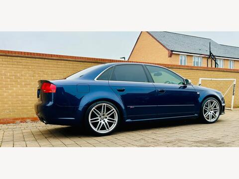
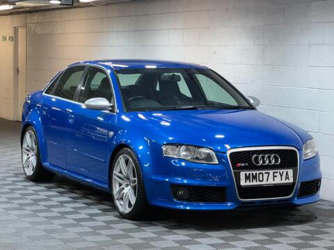
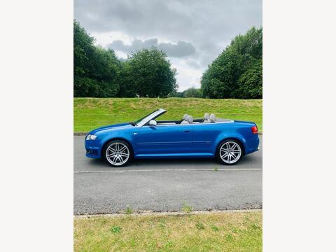

The Story
Four years after the B5 RS4 Avant left production, quattro GmbH — Audi’s performance arm at Neckarsulm — brought the badge back. An early prototype appeared in February 2005 at “quattro Night”, the company’s celebration at its Ingolstadt headquarters. The production car was shown to North America at the Detroit show in January 2006; Europe had it by the middle of that year, and every one was assembled at the dedicated quattro GmbH facility in Neckarsulm.
Three firsts and one return fix the B7’s place in the bloodline. The first V8-engined RS4, where the B5 had used a twin-turbo V6. The first normally aspirated RS model of any kind. The first RS4 saloon and the first — and only — RS4 Cabriolet, after two generations of Avant-only cars. And the return of the nameplate itself: there was no B6 RS4.
The timing was pointed. BMW’s E46 M3, 343 PS of straight-six, was bowing out in 2006, and the V8 E90 M3 would not arrive until 2007. For roughly a year the RS4 stood alone: a 420 PS, high-revving V8 in a compact executive body — and unlike the M3 it drove all four wheels and came as a five-seat saloon or estate.
“A V8 executive that gives the BMW M3 a run for its money” — with a chassis balance decidedly ‘un-Audi’.
evo, buying guide verdict
Around 10,000 were built across the three body styles before production ended in autumn 2008; roughly 2,000 crossed to the USA. How the run divided between saloon, Avant and Cabriolet is a question Audi has never settled publicly — the figures circulating on owner forums do not add up, so none are repeated here.
The Engine
Engine code BNS. A 4,163 cc, 90-degree V8 — 84.5 mm bores at 92.8 mm stroke — with four valves per cylinder and direct injection. FSI is the load-bearing detail: injecting fuel straight into the chamber cools the charge in the cylinder, and that charge cooling is what buys a 12.5:1 compression ratio on a naturally aspirated road engine. It is also, in fairness, what sends the intake valves sooty — no fuel ever washes over them. The mechanic’s chapter deals with that.
The construction reads like a motorsport parts list: a two-piece, closed-deck cylinder block with 90 mm bore spacing; roller finger cam followers with hydraulic backlash compensation; chrome-plated, sodium-filled valve stems to carry heat out of the combustion chamber; 11.0 mm of valve lift. The specific output works out at roughly 101 PS per litre — arithmetic, not folklore: 420 divided by 4.163.
The headline is not the peak figure but the spread. Ninety per cent of peak torque is on call from 2,250 rpm all the way to 7,600 rpm, and peak power arrives just 200 rpm short of the 8,000 rpm redline, with the limiter at 8,250. It is a genuinely high-revving V8 in a four-door body — the trait every retrospective singles out.
One gearbox: a six-speed Getrag manual. No automatic, no dual-clutch, no debate. The factory claimed 0–100 km/h in 4.8 seconds for the saloon and 4.9 for the Avant; Road & Track measured 4.5 to sixty-two. Top speed is pegged at 250 km/h on every variant.
The Chassis
The B7 carries the third-generation Torsen T3 centre differential — asymmetric, dynamic, and set to a 40:60 front-to-rear torque split by default, with a 4:1 torque bias ratio against the standard A4’s 2:1. That rear bias was quattro GmbH’s direct answer to the nose-led reputation of earlier fast Audis, and the period road tests credited it with monstrous traction that had not cost the car its involvement.
Then there is DRC — Dynamic Ride Control — and it deserves its reputation. Entirely mechanical, no sensors, no lag: diagonally opposed dampers, front-left to rear-right and front-right to rear-left, are linked hydraulically through a central valve. When the body rolls or pitches, oil moves across the diagonal, stiffening the damper that needs support and relieving the one that does not. The car sits 30 mm lower than a standard A4, with a further optional 10 mm drop. The full mechanism is drawn out in the Blueprint tab.
Braking is by 365 mm ventilated front discs with Brembo eight-piston monoblock calipers and 324 mm rears; from 2007 an optional package brought 380 mm carbon-ceramic discs from SGL Carbon with six-piston calipers. Kerb weight runs 1,650–1,680 kg for the saloon, 1,710 for the Avant and 1,845 for the Cabriolet, in the European DIN figures.
The Design
The B7 is the template for restrained RS aggression, and every cue earns its keep. The box-flared arches are not decoration: the body measures 1,816 mm across the front wings — said to be around 35 mm wider than an A4 or S4 — purely to clear a widened track. The mirror housings are matt, natural aluminium: the classic RS tell. Two oval exhaust tips replace the S4’s four round outlets. Honeycomb mesh fills the grilles where the standard car wears egg-crate.
Inside, a small-diameter, flat-bottomed steering wheel — perforated leather, aluminium-effect lower section carrying the RS4 script — credited as Audi’s first on a production car, though nobody has ever produced the paperwork. European saloons and Avants took the RS4-embossed bucket seats, the “wingbacks”, with electrically inflatable side bolsters; the Cabriolet made do with S4-style chairs, and North America got conventional Recaros. Drilled aluminium pedals and carbon dash inserts finish the room.



Choose a paint · the photographs, accents and 3D car follow
The palette · seven colours · approximate
- Sprint Blue
- Misano Red
- Imola Yellow
- Avus Silver
- Daytona Grey
- Mugello Blue
- Phantom Black
US distribution data — forum-derived, indicative only — suggests black and grey dominated while Sprint Blue (~7%) and Misano Red (~5%) were scarce when new. The two signature colours carry a premium now.
The Mechanic’s Chapter
Robust where it matters — block, gearbox, quattro system — and needy in four specific places. A good B7 is defined by how the four have been managed, and the service file tells you before the test drive does.
Intake-valve decarbonisation
THE FSI TAX- SYMPTOM
- Rough, lumpy idle · misfires · blue smoke on start-up · dulled throttle response
- WINDOW
- 60,000–100,000 mi — earlier on town-driven cars
- FIX
- Inlet manifold off; all eight ports walnut-blasted
- BUDGET
- £500–£1,000 at a specialist
- NOTE
- Hard-revved engines carbon up more slowly. No invoice in the file? Price the job into the offer.
DRC — reseal & re-pressurise
THE STANCE TEST- SYMPTOM
- Saggy or uneven stance · deteriorating ride · knocking over bumps · fluid weeps at the dampers
- FIX
- Replace or reseal the dampers; re-pressurise with specialist tooling — not a general-garage job
- RULE
- If one damper fails, its diagonal partner is replaced with it — the system is a pair of pairs
- NOTE
- Many cars run coilovers instead. Cheaper to run; breaks originality — the collector walks away.
Oil discipline
EVERY 1,000 MILES- CONSUMPTION
- Up to 2–3 litres per 1,000 mi in hard-driven cars — by design and by use
- PRACTICE
- A level check every 1,000 mi is standard ownership, not paranoia
- ON INSPECTION
- Insist on a cold start; read the oil habits in the service file before the engine bay
Cooling & corrosion
THE HIDDEN ONES- FAULT
- Debris and galvanic corrosion attack the radiators and the steel oil-cooler pipes at the aluminium cooler
- BUDGET
- Auxiliary radiator ≈ £500 fitted
- NOTE
- Inspect the pipes on a lift, not from the arch
The rest of the sheet
- Gearbox: the six-speed has proven fault-free; clutches last around 40,000 mi even driven hard — check for judder on track-used cars. A failed £23 clutch switch (≈£150 fitted) kills cruise control and the throttle blip.
- Coil-packs fail and can take catalysts with them; exhaust bypass-valve actuators seize — “sport mode always on” is the giveaway.
- Early cars had a lumpy idle cured by a warranty ECU update — confirm it was applied.
- No systemic timing-chain or camshaft trouble is documented for the BNS; the infamous FSI cam-follower worry belongs to other engines. Any top-end rattle still gets investigated.
- The body does not rot — inspect stone-chips and paint-repair quality instead. Inside: driver’s bolster wear, the centre-armrest catch, and an in-date tyre-sealant canister. There is no spare wheel.
- Factory service intervals were not verified for this dossier; community practice is oil checks every 1,000 mi and a manifold-off decarbonisation roughly every 40,000 mi.
Pre-purchase inspection · minimum
- Cold start — smoke, idle quality
- Carbon-clean and DRC invoices
- Oil-level habits in the history
- Stance square and level
- Damper weep check on a lift
- Clutch bite and judder
- Coil-pack and misfire scan
- Radiator and oil-cooler pipe corrosion
- ECU update status
- Bolster and armrest condition
- Sealant kit present and in date
The Numbers
| Engine | 4.2-litre (4,163 cc) 90° V8 · FSI direct injection · 32v DOHC · code BNS |
|---|---|
| Bore × stroke / CR | 84.5 × 92.8 mm · 12.5:1 |
| Power | 420 PS (309 kW / 414 bhp) @ 7,800 rpm |
| Torque | 430 Nm (317 lb ft) @ 5,500 rpm · 90% from 2,250–7,600 rpm |
| Redline / limiter | 8,000 / 8,250 rpm |
| Gearbox | 6-speed Getrag manual — the only option |
| Drivetrain | quattro permanent AWD · Torsen T3 centre diff · 40:60 default |
| 0–100 km/h | 4.8 s saloon / 4.9 s Avant (factory claim) |
| Top speed | 250 km/h (155 mph), electronically limited |
| Kerb weight | 1,650–1,680 kg saloon · 1,710 kg Avant · 1,845 kg Cabriolet |
| Dimensions (Avant) | 4,586 × 1,816 × 1,415 mm · wheelbase 2,651 mm |
| Brakes | F 365 × 34 mm Brembo 8-piston · R 324 × 22 mm · optional 380 mm SGL ceramics (2007+) |
| Wheels / tyres | 8.5J × 18 · 255/40 R18 |
| Fuel | 63-litre tank · 13.5–13.6 l/100 km combined (NEDC) |
| Suspension | DRC diagonal hydraulic damper linkage · −30 mm vs A4 (−40 mm optional) |
| Production | 2006–2008 · ~10,000 total · ~2,000 to the USA |